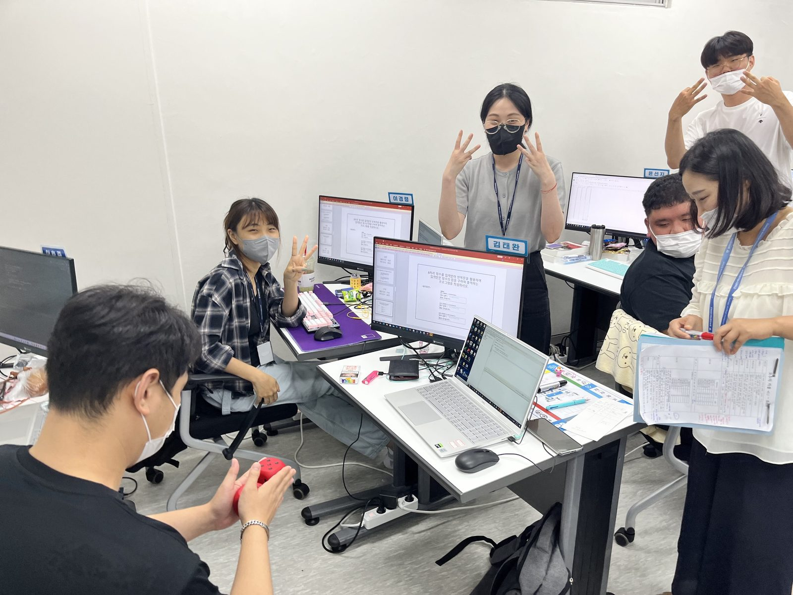
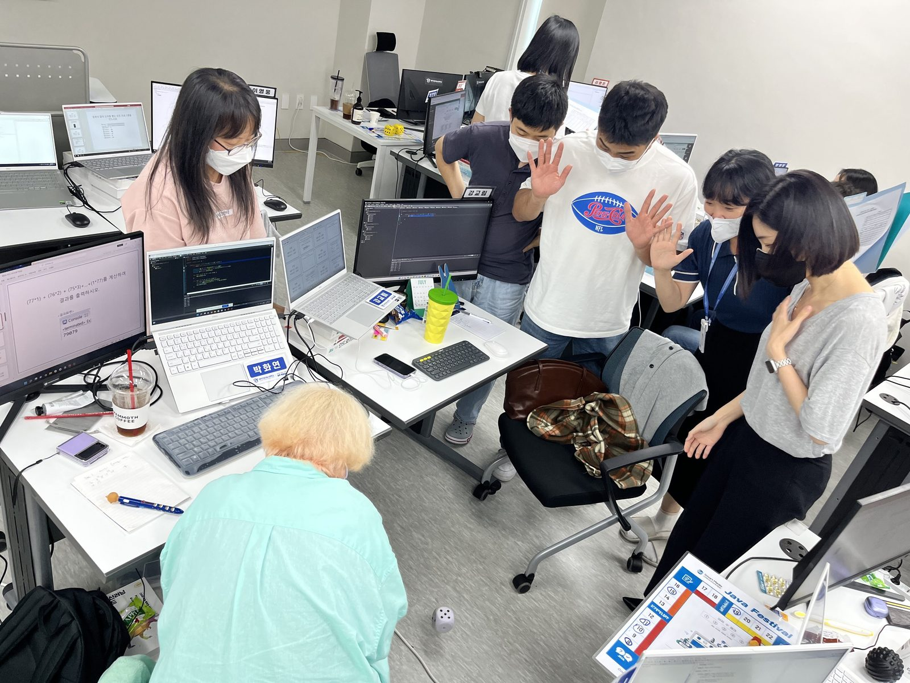
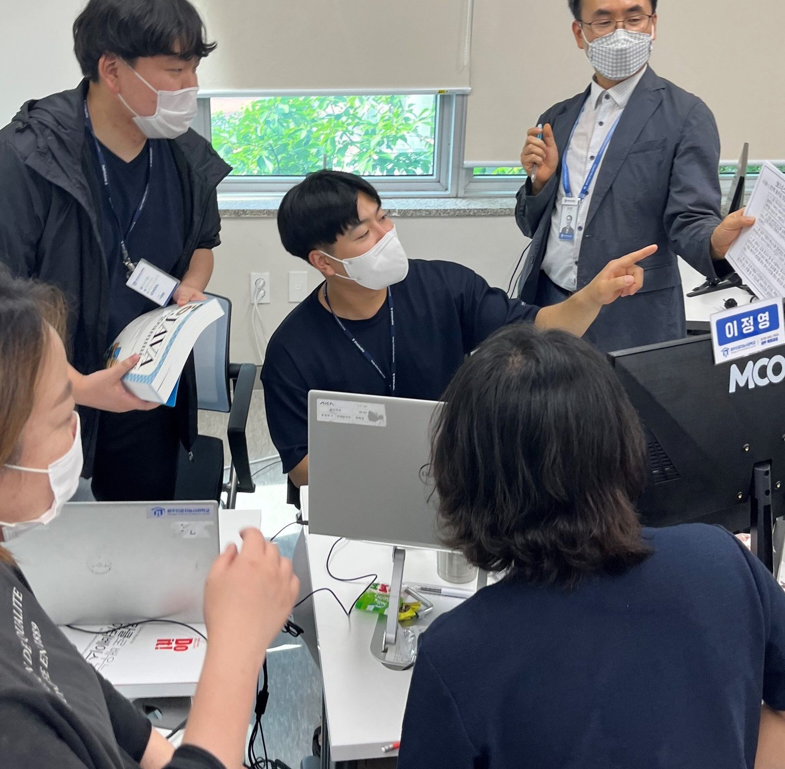
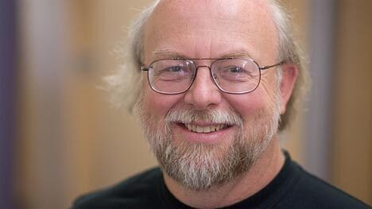
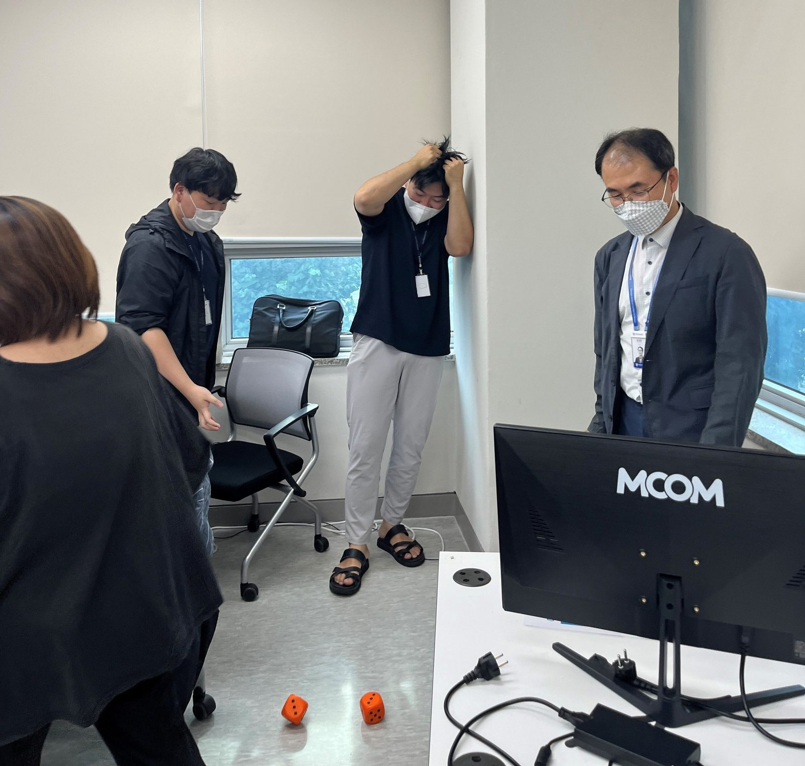
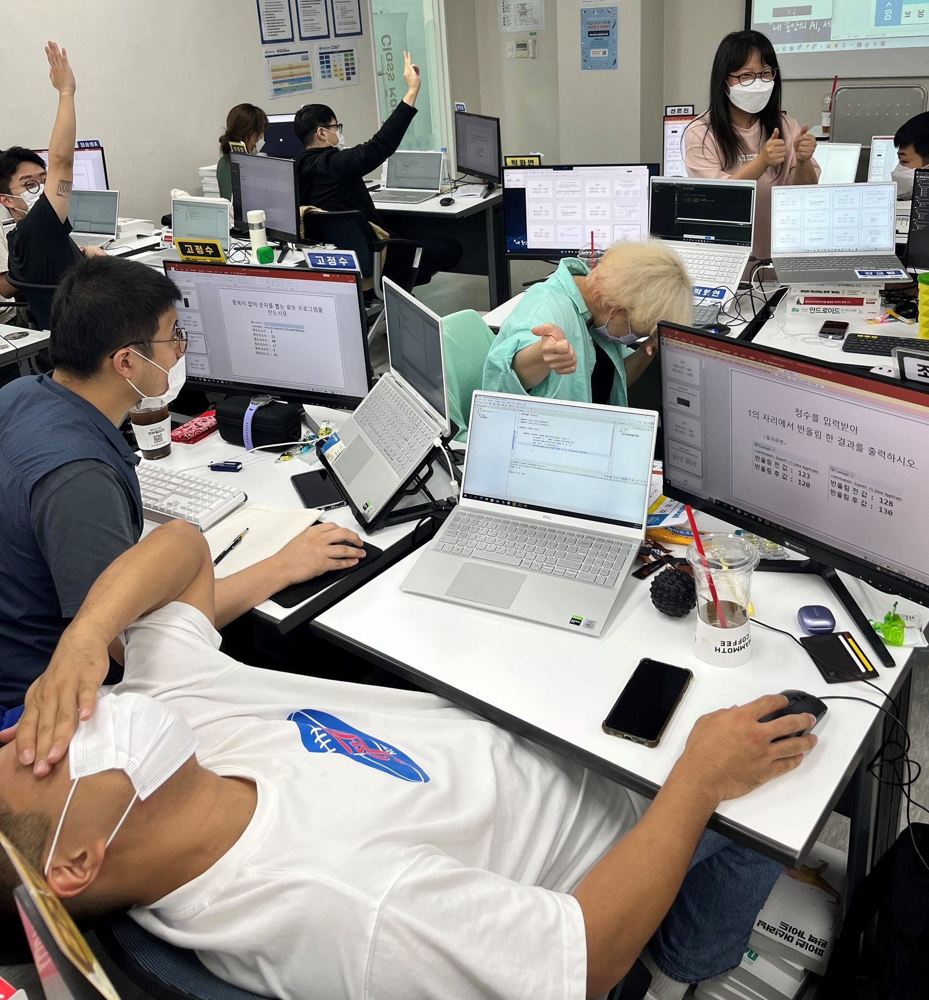
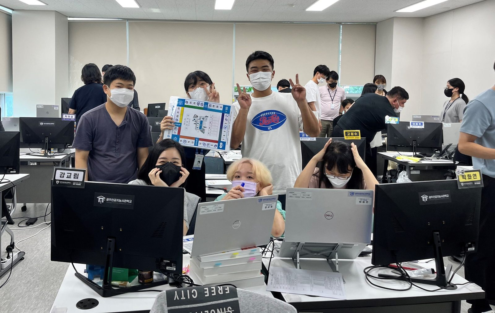
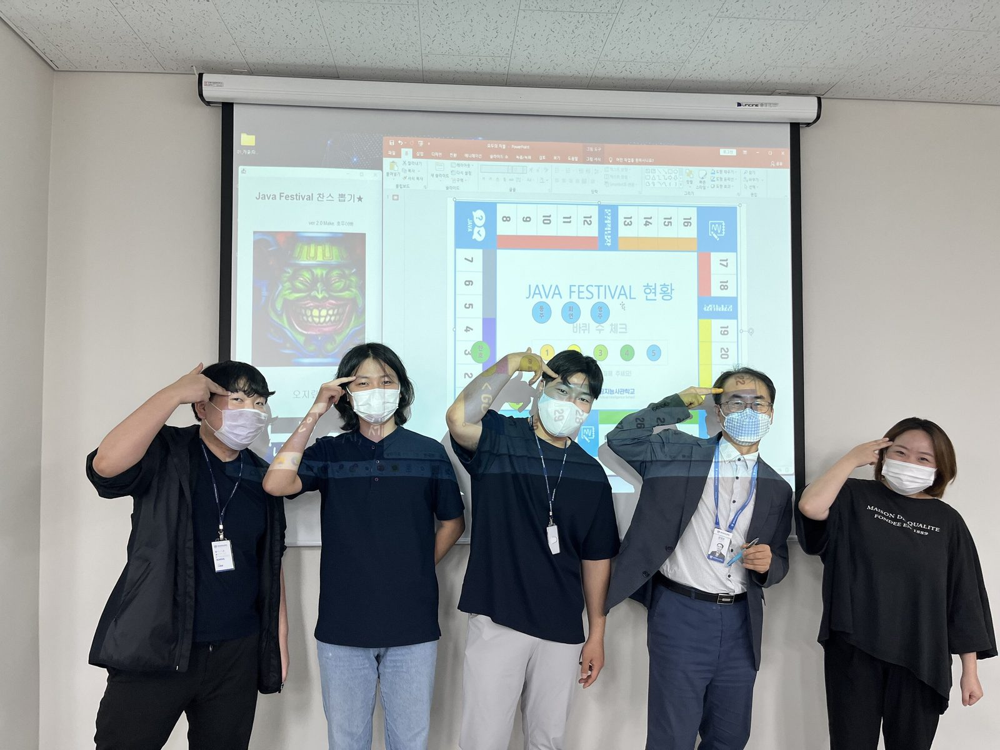

Let's get it! Java Festival!
안녕하세요 ~ 여러분!
아주 재미난 소식을 들고 찾아왔답니다
바로 지난 7월 인공지능사관학교에서 열린 CodingFestival 이야기 랍니다.
그 중 먼저 자바페스티벌에 대해 알아볼까요?
[ Java Festival 🥇🥈🥉 ]
부루마블과 유사한 게임방식으로 앞으로 프로젝트를 진행하게 될 팀별로 진행됩니다.
주사위를 던져 이동하며 보드판 위 다양한 알고리즘 문제와 보너스 퀴즈들을 풀어 점수를 획득할 수 있으며
지루하고 어렵기만 한 알고리즘 문제들을 하나의 재밌는 게임처럼 풀어
학습 성취감을 느낌으로서 문제해결에 흥미를 가질 수 있도록 진행되는 페스티벌입니다!
코딩실력 UP 팀워크 UP ! 💨


주사위를 던지는 모습들이 아주 즐거워보이네요 (❁´◡`❁) 그렇다고 코딩문제 만 푸느냐? 그건 아닙니다. ( ??? )은 캐나다의 소프트웨어 개발자이다. 자바를 최초로 개발하여 '자바의 아버지'라 불리며, 가장 영향력 있는 프로그래머들 가운데 한 사람이다.
어 ..어.. 그사람인데 ?
정답은 제임스 고슬링 입니다 !╰(*°▽°*)╯ 단순 알고리즘 문제 뿐만 아니라 재밌는 보너스게임, 다양한 찬스들로 이루어져 있어 모두들 시간 가는 줄 모르고 페스티벌에 참여하였습니다!

때로는 일이 뜻대로 되지 않아 머리를 잡아 뜯기도 , 아슬하게 정해진 시간안에 문제를 풀기도 하였지만
함께 해결 해 나가는 경험을 통해 팀원들과 더욱 끈끈해지며 성취감을 느낀 하루였을거라 생각합니다! v(●'◡'●)v
다음에 또 인공지능의 다양한 소식을 들고 찾아뵙겠습니다! ( •_•)>⌐■-■